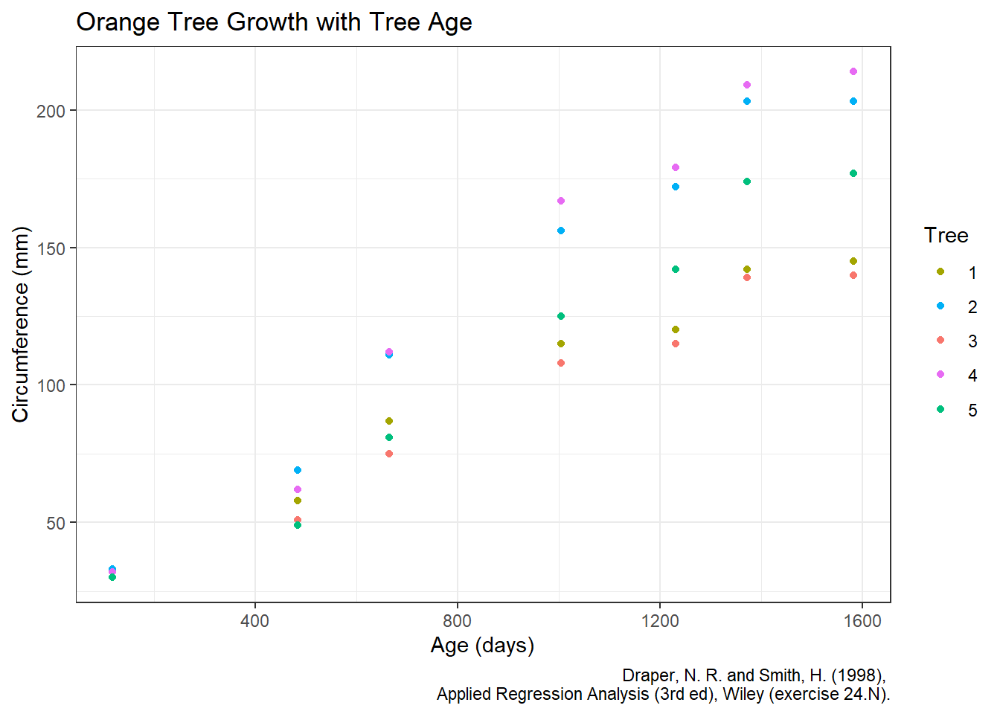

library(tidyverse)Orange Tree Dataset Analysis
Intro
The Orange dataset or Growth of Orange Trees contains information about the growth of a set of Orange trees. I want to explore this data and use linear regression to analyze how the age of the tree effects its circumference.
Setup
I will be using the tidyverse for data manipulation and visualization.
Exploration
Looking at the data we can see there are three columns. “Tree” identifies which tree is being measured, “age” measures the trees age in days, and “circumference” is the circumference of the tree in millimeters.
Orange |>
names()[1] "Tree" "age" "circumference"Orange |>
head() |>
knitr::kable()| Tree | age | circumference |
|---|---|---|
| 1 | 118 | 30 |
| 1 | 484 | 58 |
| 1 | 664 | 87 |
| 1 | 1004 | 115 |
| 1 | 1231 | 120 |
| 1 | 1372 | 142 |
Visualization
Before the linear regression analysis, I want to make sure the data is roughly linear.
Orange |>
ggplot(aes(x = age, y = circumference)) +
geom_point(aes(color = Tree)) +
labs(
title = "Orange Tree Growth with Tree Age",
x = "Age (days)", y = "Circumference (mm)",
caption = "Draper, N. R. and Smith, H. (1998),
Applied Regression Analysis (3rd ed), Wiley (exercise 24.N)."
) +
scale_color_discrete(breaks = 1:5) +
theme_bw()
Figure 1 shows that the data is approximately linear.
Issues
The data has a few issues that prevent a simple linear regression. On issue is that the data points are not independent, the series is from the same set of trees. Another issue is that the response variable distribution is less normal than I would like. This can be shown with a Shapiro-Wilk test.
Orange$circumference |>
shapiro.test()
Shapiro-Wilk normality test
data: Orange$circumference
W = 0.94591, p-value = 0.08483The p-value is greater than the traditional significance level of 0.05 so I cannot say the data is approximately normal. These issues make it difficult to justify a linear regression model for the data without further data manipulation to attempt to at least normalize the response variable data. Because of these reasons, I will not continue with a linear regression model but may return to this dataset later.